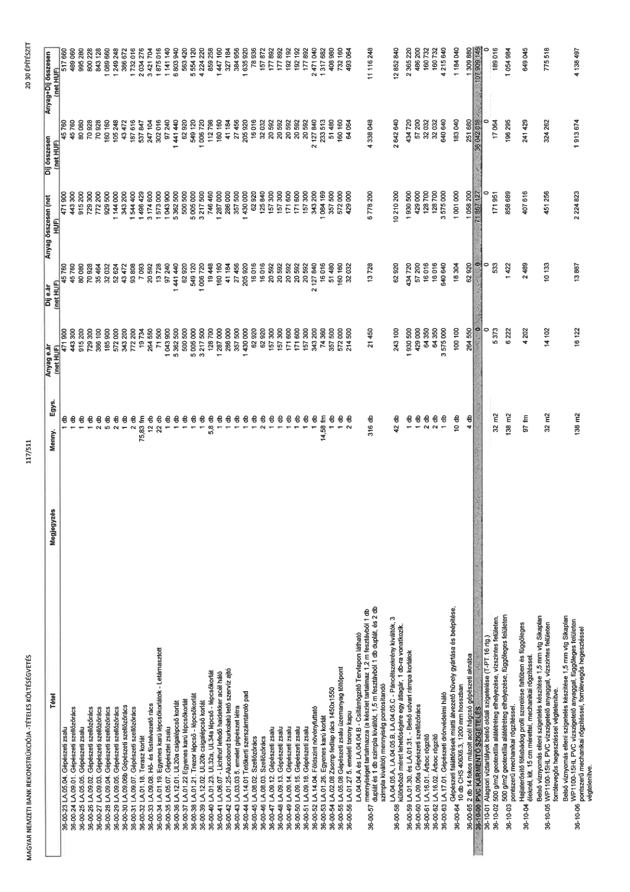

| Tétel | Megjegyzés | Menny. | Egys. | Anyag e.ár (net HUF) | Díj e.ár (net HUF) | Anyag összesen (net HUF) | Díj összesen (net HUF) | Anyag+Díj összesen (net HUF) |
|---|---|---|---|---|---|---|---|---|
| 36-00-23 LA.05.04. Gépészeti zsalu | NaN | 1 | db | 471 900 | 45 760 | 471 900 | 45 760 | 517 660 |
| 36-00-24 LA.09.01. Gépészeti szellőzőrács | NaN | 1 | db | 443 300 | 45 760 | 443 300 | 45 760 | 489 060 |
| 36-00-25 LA.05.05. Gépészeti zsalu | NaN | 1 | db | 915 200 | 80 080 | 915 200 | 80 080 | 995 280 |
| 36-00-26 LA.09.02. Gépészeti szellőzőrács | NaN | 1 | db | 729 300 | 70 928 | 729 300 | 70 928 | 800 228 |
| 36-00-27 LA.09.03. Gépészeti szellőzőrács | NaN | 2 | db | 386 100 | 35 464 | 772 200 | 70 928 | 843 128 |
| 36-00-28 LA.09.04. Gépészeti szellőzőrács | NaN | 5 | db | 185 900 | 32 032 | 929 500 | 160 160 | 1 089 660 |
| 36-00-29 LA.09.05. Gépészeti szellőzőrács | NaN | 2 | db | 572 000 | 52 624 | 1 144 000 | 105 248 | 1 249 248 |
| 36-00-30 LA.09.06b Gépészeti szellőzőrács | NaN | 1 | db | 343 200 | 43 472 | 343 200 | 43 472 | 386 672 |
| 36-00-31 LA.09.07. Gépészeti szellőzőrács | NaN | 2 | db | 772 200 | 93 808 | 1 544 400 | 187 616 | 1 732 016 |
| 36-00-32 LA.01.18. Terasz korlát | NaN | 75,83 | fm | 19 734 | 7 093 | 1 496 429 | 537 847 | 2 034 276 |
| 36-00-33 LA.09.08. Hő- és füstelvezető rács | NaN | 12 | db | 264 550 | 20 592 | 3 174 600 | 247 104 | 3 421 704 |
| 36-00-34 LA.01.19. Egyenes karú lépcsőkorlátok - Letámasztott | NaN | 22 | db | 71 500 | 13 728 | 1 573 000 | 302 016 | 1 875 016 |
| 36-00-35 LA.05.07. Gépészeti zsalu | NaN | 1 | db | 1 043 900 | 97 240 | 1 043 900 | 97 240 | 1 141 140 |
| 36-00-36 LA.12.01. UL20a csigalépcső korlát | NaN | 1 | db | 5 362 500 | 1 441 440 | 5 362 500 | 1 441 440 | 6 803 940 |
| 36-00-37 LA.01.22 Egyenes karú lépcsőkorlát | NaN | 1 | db | 500 500 | 62 920 | 500 500 | 62 920 | 563 420 |
| 36-00-38 LA.01.21. Trezor lépcső - lépcsőkorlát | NaN | 1 | db | 5 005 000 | 549 120 | 5 005 000 | 549 120 | 5 554 120 |
| 36-00-39 LA.12.02. UL20b csigalépcső korlát | NaN | 1 | db | 3 217 500 | 1 006 720 | 3 217 500 | 1 006 720 | 4 224 220 |
| 36-00-40 LA.01.23. UL32a, UL34b lépcső - lépcsőkorlát | NaN | 5,8 | db | 128 700 | 19 448 | 746 460 | 112 798 | 859 258 |
| 36-00-41 LA.06.07 - Lichthof lefedő hajlított acél háló | NaN | 1 | db | 1 287 000 | 16 160 | 1 287 000 | 160 160 | 1 447 160 |
| 36-00-42 LA.01.25-Alucobond burkolatú tető szerviz ajtó | NaN | 1 | db | 286 000 | 41 184 | 286 000 | 41 184 | 327 184 |
| 36-00-43 LA.03.03. 5. emelet gépészet létra | NaN | 1 | db | 357 500 | 27 456 | 357 500 | 27 456 | 384 956 |
| 36-00-44 LA.14.01 Tetőkerti szerszámtároló pad | NaN | 1 | db | 1 430 000 | 205 920 | 1 430 000 | 205 920 | 1 635 920 |
| 36-00-45 LA.08.02. Szellőzőrács | NaN | 4 | db | 15 730 | 4 004 | 62 920 | 16 016 | 78 936 |
| 36-00-46 LA.08.03. Szellőzőrács | NaN | 2 | db | 62 920 | 16 016 | 125 840 | 32 032 | 157 872 |
| 36-00-47 LA.09.12. Gépészeti zsalu | NaN | 1 | db | 157 300 | 20 592 | 157 300 | 20 592 | 177 892 |
| 36-00-48 LA.09.13. Gépészeti zsalu | NaN | 1 | db | 157 300 | 20 592 | 157 300 | 20 592 | 177 892 |
| 36-00-49 LA.09.14. Gépészeti zsalu | NaN | 1 | db | 171 600 | 20 592 | 171 600 | 20 592 | 192 192 |
| 36-00-50 LA.09.15. Gépészeti zsalu | NaN | 1 | db | 171 600 | 20 592 | 171 600 | 20 592 | 192 192 |
| 36-00-51 LA.09.18. Gépészeti zsalu | NaN | 1 | db | 157 300 | 20 592 | 157 300 | 20 592 | 177 892 |
| 36-00-52 LA.14.04. Földszint növényfuttató | NaN | 1 | db | 343 200 | 2 127 840 | 343 200 | 2 127 840 | 2 471 040 |
| 36-00-53 LA.01.26. Egyenes karú korlát | NaN | 14,58 | fm | 74 360 | 16 016 | 1 084 169 | 233 513 | 1 317 682 |
| 36-00-54 LA.02.08 Zsomp fedlap rács 1450x1550 | NaN | 1 | db | 357 500 | 51 480 | 357 500 | 51 480 | 408 980 |
| 36-00-55 LA.05.08 Gépészeti zsalu üzemanyag töltőpont | NaN | 1 | db | 572 000 | 160 160 | 572 000 | 160 160 | 732 160 |
| 36-00-56 LA.01.27. 5. emeleti torony kapu | NaN | 2 | db | 214 500 | 32 032 | 429 000 | 64 064 | 493 064 |
| 36-00-57 LA.04.04 és LA.04.04.B - Csillámrögzítő Tervlapon látható mennyiséget tartalmazza | NaN | 316 | db | 21 450 | 13 728 | 6 778 200 | 4 338 048 | 11 116 248 |
| 36-00-58 LA.04.05, LA.04.05.B, LA.04.05.C - Páncélszekrény kiváltók, 3 különböző méret lehetősége egy átlagár, 1 db-ra vonatkozik. | NaN | 42 | db | 243 100 | 62 920 | 10 210 200 | 2 642 640 | 12 852 840 |
| 36-00-59 LA.01.30. és LA.01.31. - Belső udvari rámpa korlátok | NaN | 1 | db | 1 930 500 | 434 720 | 1 930 500 | 434 720 | 2 365 220 |
| 36-00-60 LA.09.06a Gépészeti szellőzőrács | NaN | 1 | db | 429 000 | 57 200 | 429 000 | 57 200 | 486 200 |
| 36-00-61 LA.16.01. Árboc rögzítő | NaN | 2 | db | 64 350 | 16 016 | 128 700 | 32 032 | 160 732 |
| 36-00-62 LA.16.02. Árboc rögzítő | NaN | 2 | db | 64 350 | 16 016 | 128 700 | 32 032 | 160 732 |
| 36-00-63 LA.17.01. Gépészeti drótvédelmi háló | NaN | 1 | db | 3 575 000 | 640 640 | 3 575 000 | 640 640 | 4 215 640 |
| 36-00-64 Gépészeti faláttörések miatti átvezető hüvely gyártása és beépítése, 10 db CHS 406x6.3, 1200 mm hosszban | NaN | 10 | db | 100 100 | 18 304 | 1 001 000 | 183 040 | 1 184 040 |
| 36-00-65 2 db 14 fokos mázolt acél hágcsó gépészeti aknába | NaN | 4 | db | 264 550 | 62 920 | 1 058 200 | 251 680 | 1 309 880 |
| 36-10-00 PVC KEMÉNY SZIGETELÉS | NaN | NaN | NaN | 0 | 0 | 71 867 127 | 36 042 018 | 107 909 145 |
| 36-10-01 Alagsori víztartályok belső oldali szigetelése (T-PT 16 rtg.) | NaN | 32 | m2 | 5 373 | 533 | 171 951 | 17 064 | 189 015 |
| 36-10-02 500 g/m2 geotextília alátétréteg elhelyezése, vízszintes felületen. | NaN | 138 | m2 | 6 222 | 1 422 | 858 689 | 196 295 | 1 054 984 |
| 36-10-03 Hajlaterősítő fóliabádog profil szerelése falidőben és függőleges éleknél, kit. 15 cm mérettel, mechanikai rögzítéssel. | NaN | 97 | fm | 4 202 | 2 489 | 407 616 | 241 429 | 649 045 |
| 36-10-04 Belső víznyomás elleni szigetelés készítése 1,5 mm vtg Sikaplan WP1100-15HL PVC vízszigetelő anyaggal, vízszintes felületen forrólevegős hegesztéssel végtelenítve. | NaN | 32 | m2 | 14 102 | 10 133 | 451 256 | 324 262 | 775 518 |
| 36-10-05 Belső víznyomás elleni szigetelés készítése 1,5 mm vtg Sikaplan WP1100-15HL PVC vízszigetelő anyaggal, függőleges felületen pontszerű mechanikai rögzítéssel, forrólevegős hegesztéssel végtelenítve. | NaN | 138 | m2 | 16 122 | 13 867 | 2 224 823 | 1 913 674 | 4 138 497 |
